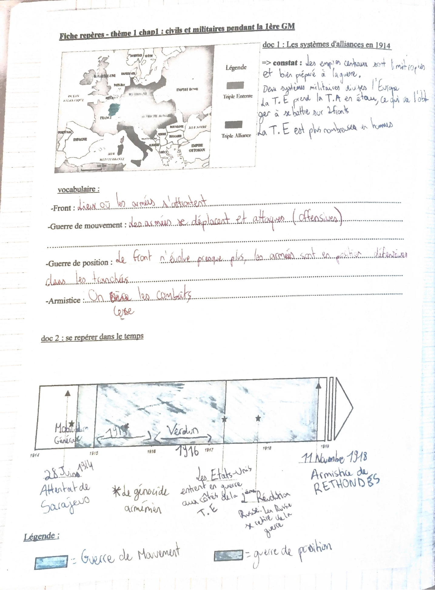
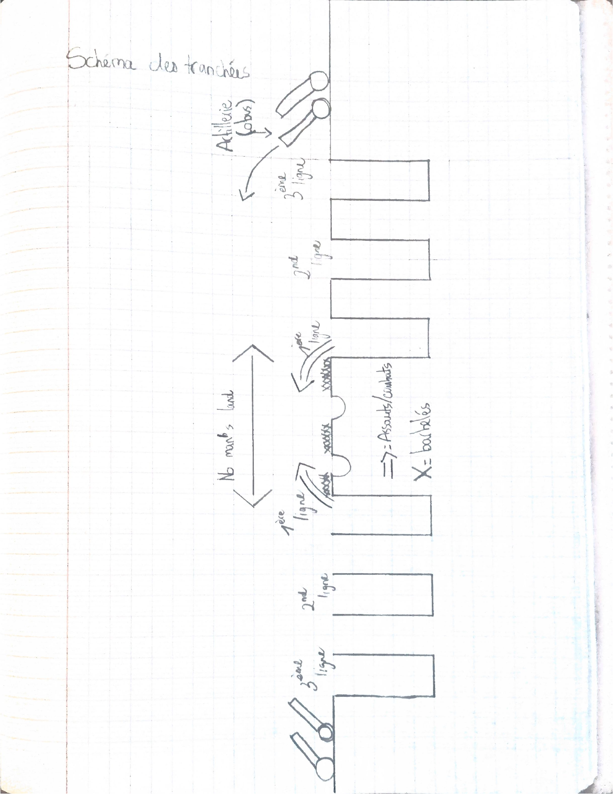
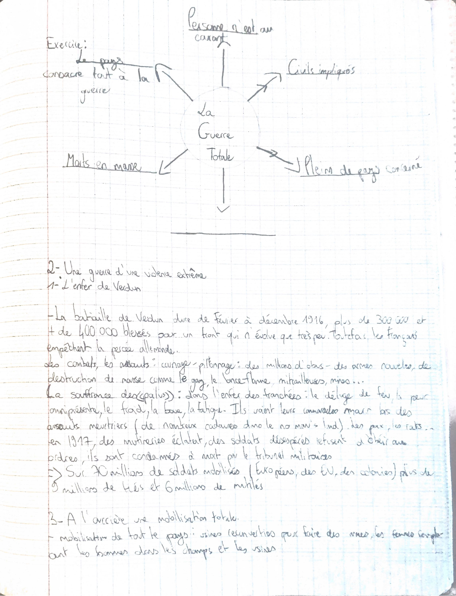

Thème 1, 1914-1945. Pour l’instant, un seul chapitre est dans le cahier :
civils et militaires pendant la Première Guerre mondiale.
La lecture courte suit les dates. La lecture complète reprend le cours.
Frise de la couverture
Repères écrits sur la première page du cahier. Seule la Première Guerre mondiale a un cours pour le moment.
Découverte de l’Amérique. Repère de couverture, pas encore de leçon.
Révolution française. Repère de couverture, pas encore de leçon.
Première Guerre mondiale. Chapitre en cours.
Seconde Guerre mondiale. Annoncée sur la couverture, pas encore de leçon.
Chapitre 1, en dates
Compétence du cours : repères chronologiques et étude de documents.
Attentat de Sarajevo : l’héritier d’Autriche-Hongrie est assassiné par un Serbe. L’Autriche-Hongrie déclare la guerre à la Serbie, la Russie entre à son tour. Les alliances s’enchaînent.
Triple Entente : France, Royaume-Uni, Russie, rejoints ensuite par l’Italie, la Grèce, la Roumanie et le Portugal. Triple Alliance, les empires centraux : Autriche-Hongrie et Allemagne, rejoints par la Bulgarie et l’Empire ottoman. Guerre de mouvement, puis guerre de position.
Génocide des Arméniens dans l’Empire ottoman. 1,5 million de morts, environ les deux tiers de la communauté arménienne de Turquie.
Verdun. Plus de 300 000 morts et plus de 400 000 blessés. Le front bouge très peu. Les Français empêchent la percée allemande.
Mutineries. Les États-Unis entrent aux côtés de la Triple Entente. Février : le tsar abdique. 24-25 octobre : les bolcheviks, menés par Lénine et Trotski, prennent le pouvoir. La Russie quitte la guerre.
Armistice de Rethondes. On cesse les combats.
Traité de Versailles. L’Allemagne est jugée responsable, paie, perd des territoires et des colonies, et se voit privée de sa puissance militaire. Le cours parle d’une paix fragile et humiliante.
À retenir
Deux alliances se font face. Les empires centraux sont limitrophes. L’Entente les prend en étau : ils doivent se battre sur deux fronts. L’Entente est plus nombreuse.
De nouvelles armes tuent en masse : obus, mitrailleuses, gaz, chars, lance-flammes. C’est une violence de masse, puis une guerre totale : le pays, les civils et de nombreux États sont pris dans la guerre.
À l’arrière, usines d’armement, femmes au travail, censure, pénurie, inflation. Dans le Nord et en Belgique, l’occupation pèse sur les habitants.
Bilan noté en fin de chapitre : environ 10 millions de morts, des millions de mutilés, des veuves, des orphelins, des dégâts matériels, la pénurie et l’inflation.
Cahier · partie 1 · 1914
Les forces en présence
Triple Entente : France, Royaume-Uni et Russie. Après 1914, l’Italie, la Grèce, la Roumanie et le Portugal les rejoignent.
Triple Alliance, les puissances centrales : Empire austro-hongrois et Empire allemand. La Bulgarie et l’Empire ottoman les rejoignent ensuite.
Le 28 juin 1914, l’héritier du trône d’Autriche-Hongrie est assassiné par un Serbe. L’enchaînement des alliances suit : l’Autriche-Hongrie déclare la guerre à la Serbie, la Russie déclare la guerre à son tour.

Document 1 du cahier. Constat écrit à côté de la carte : les empires centraux sont limitrophes et préparés à la guerre. Deux systèmes militaires divisent l’Europe. L’Entente prend l’Alliance en étau, donc deux fronts. L’Entente a plus d’hommes.Exercice du cahier
Les armes, et le passage à la violence de masse
Ruben relève : fusils, canon, obus, baïonnette, couteau, grenades, gaz asphyxiant, mitrailleuse, chars, avions équipés de mitrailleuses, lance-flammes.
Phrase de conclusion du cahier : de nouvelles armes ont pour but de tuer le plus grand nombre de soldats ennemis. On entre dans la violence de masse.
Autre réponse, sur la violence des combats : sur les fronts, des obus tombent à la seconde, des assauts sont lancés, les soldats se font mitrailler, reçoivent des obus, avancent parfois à partir de sacs de sable. Ils sentent la mort. Ils sont terrorisés.
Schéma du cahier
Les tranchées
Le front n’évolue presque plus. Les armées sont en défense dans les tranchées : c’est la guerre de position. Avant cela, les armées se déplacent et attaquent : c’est la guerre de mouvement. La frise du cahier colore en clair la guerre de mouvement, en foncé la guerre de position.

Trois lignes de chaque côté, artillerie à l’arrière, no man’s land au milieu, barbelés marqués d’une croix, assauts au centre.Cahier · 1915
Le génocide arménien
En 1915 a lieu un génocide. Il est commis sur les populations arméniennes de l’Empire ottoman. Des civils arméniens sont regroupés, puis déportés dans le désert syrien. Ils meurent de faim, de soif, d’épuisement et de maladies. Le cours donne 1,5 million de morts, soit les deux tiers de la communauté arménienne de Turquie. La Turquie refuse de reconnaître ce génocide.
Réponse de Ruben à l’exercice : les victimes sont les Arméniens, les bourreaux sont le gouvernement turc. Il note parmi les méthodes les violences, les marches forcées, la faim et la soif.
Génocide. Destruction, en partie ou en totalité, d’un peuple pour des raisons ethniques, raciales ou religieuses. Cela suppose une planification.
Cahier · partie 2 · 1916-1917
L’enfer de Verdun
Fév. – déc. 1916Durée de la bataille
+ de 300 000morts, d’après le cours
+ de 400 000blessés
Un front qui n’évolue que très peu. Pourtant les Français empêchent la percée allemande.
La souffrance des poilus : déluge de feu, peur, froid, boue, poux, fatigue. Des camarades meurent dans des assauts meurtriers. Des cadavres restent dans le no man’s land. Il y a le gaz et les rats.
En 1917, des mutineries éclatent. Des soldats désespérés refusent d’obéir aux ordres. Ils sont condamnés à mort par le tribunal militaire. Dans l’exercice, Ruben écrit qu’ils en ont marre de la guerre et qu’ils se soulèvent pour la quitter.
Le cours donne aussi un bilan plus large de la mobilisation : environ 70 millions de soldats mobilisés, Européens, Américains et soldats des colonies, plus de 9 millions de tués et 6 millions de mutilés. La fin du chapitre arrondit le bilan à 10 millions de morts.
Cahier · partie 3
À l’arrière, une mobilisation totale

Schéma « la guerre totale ». Branches lisibles : le pays consacre tout à la guerre, les civils sont impliqués, de nombreux pays sont concernés, les morts sont en masse.
Mobilisation de tout le pays. Des usines sont reconverties pour faire des armes. Les femmes remplacent les hommes dans les champs et les usines.
Les lettres des poilus sont censurées.
Les civils connaissent la pénurie et l’inflation.
En Belgique et dans le Nord de la France, les habitants supportent le poids de l’occupation : travail forcé, réquisitions.
Cahier · partie 5 · 1917-1918
Le bouleversement à l’Est, puis en Europe
Février 1917 : un mouvement révolutionnaire, ouvriers et paysans, conduit le tsar à abdiquer. Ruben note aussi les échecs militaires de la Russie.
24 et 25 octobre 1917 : les bolcheviks, parti social-communiste fondé par Lénine, dirigés par Lénine et Trotski, prennent le pouvoir.
Décisions de Lénine notées ensuite : paix séparée avec l’Allemagne, abolition de la propriété privée, guerre civile.
En Europe : vague de grèves. Certains mouvements s’inspirent du modèle russe, comme les spartakistes en Allemagne. Ces mouvements échouent.
1917, sur la frise : les États-Unis entrent en guerre aux côtés de la Triple Entente.
11 novembre 1918 : armistice de Rethondes.
Cahier · partie 6 · juin 1919
Une paix fragile
Paix officielle, extraite du traité de Versailles, juin 1919.
L’Allemagne rend l’Alsace-Lorraine à la France, prise en 1870 par la Prusse.
Elle cède une bande au sud du Danemark, toutes ses colonies, et un territoire à l’est donné à la Pologne : le couloir de Dantzig, qui coupe l’Allemagne en deux.
Elle est privée de sa puissance militaire. La Rhénanie, le long du Rhin, est occupée.
Elle est jugée responsable de la guerre et doit payer 132 milliards de marks.
Le cours dit qu’elle est vue comme un « géant enchaîné » par les articles du traité, jugés ignominieux et accablants. C’est une paix humiliante, le Diktat, selon les Allemands qui n’ont pas pu participer aux négociations.
D’autres traités démembrent ensuite les empires centraux.
Réponse de Ruben à l’exercice sur l’Allemagne : elle doit faire la paix avec la France, payer, elle est tenue pour la cause du début de la guerre, elle perd des colonies et des territoires, son économie est en désordre.
Bilan du chapitre : 10 millions de morts, des millions de mutilés, des veuves, des orphelins, des dégâts matériels importants, pénurie et inflation.
Vocabulaire du chapitre
Front
Lieu où les armées s’affrontent.
Guerre de mouvement
Les armées se déplacent et attaquent. Ce sont des offensives.
Guerre de position
Le front n’évolue presque plus. Les armées sont en position défensive dans les tranchées.
Armistice
On cesse les combats.
Pénurie
Manque.
Inflation
Très forte hausse des prix.
Réquisition
Ordre qui oblige à fournir un service ou un bien matériel.
Génocide
Destruction en partie ou en totalité d’un peuple, pour des raisons ethniques, raciales ou religieuses. Suppose une planification.